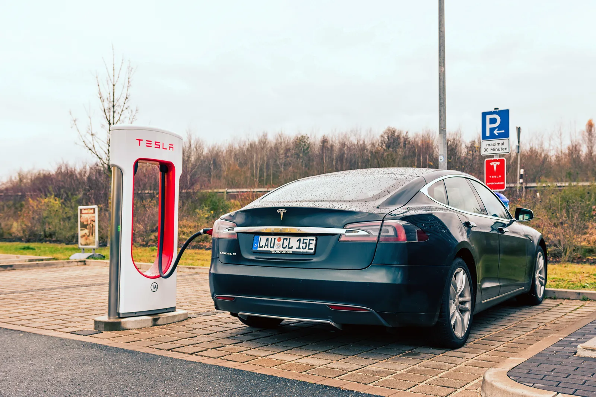
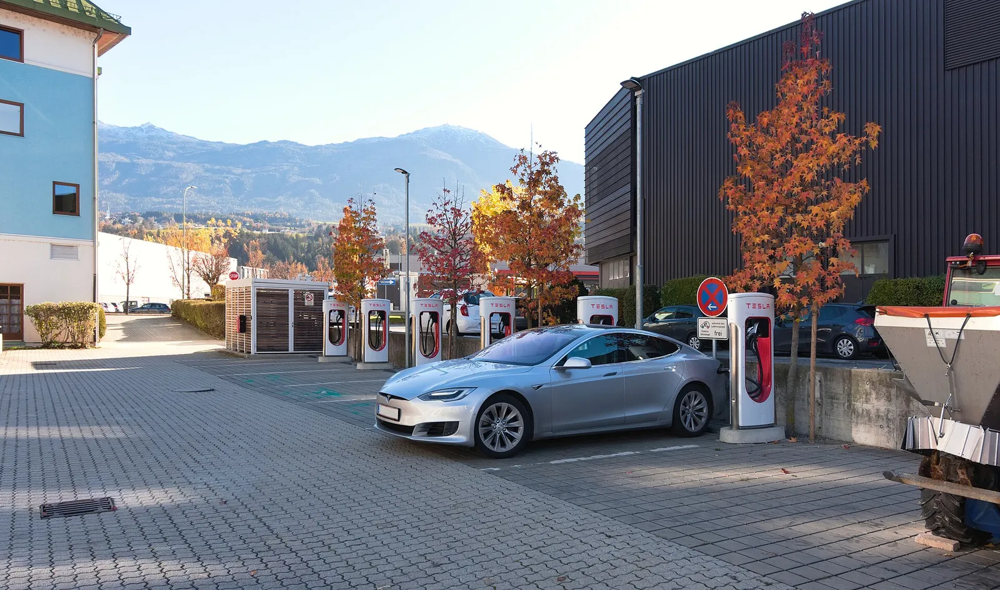
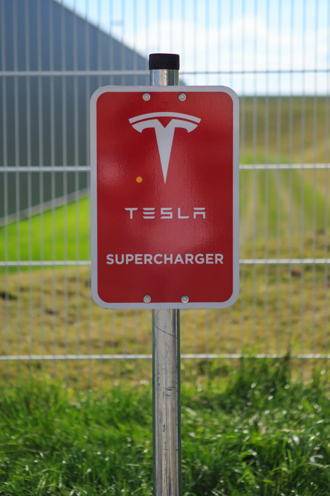
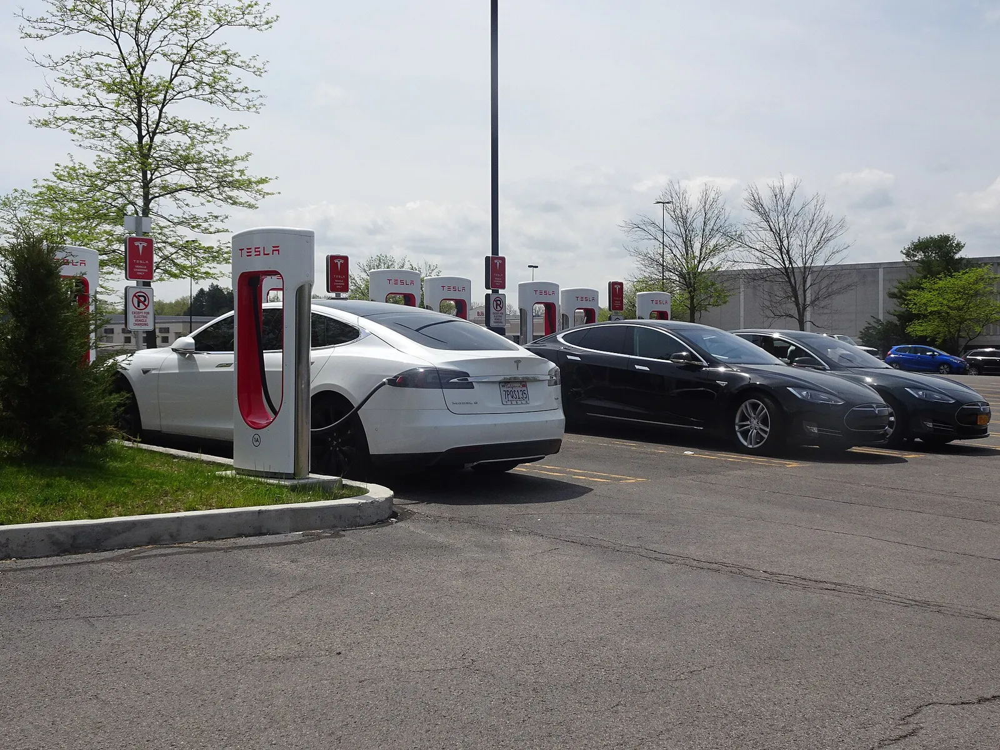

▲ 독일의 한 테슬라 슈퍼차저에서 충전 중인 모델S. 테슬라는 새로운 프리팹 방식의 아코디언 슈퍼차저를 공개했다 ⓒ Wikimedia Commons
슈퍼차저를 아코디언처럼 접었다 펼친다면 어떨까.
테슬라(Tesla)가 공장에서 미리 조립해 트럭에 실어 보내는 새로운 형태의 슈퍼차저를 공개했다. 이름부터 '아코디언(Accordion) 슈퍼차저'다. 현장에서 하나하나 세우던 기존 방식과 달리, 스톨과 전력 캐비닛, 배선까지 하나의 유닛으로 미리 조립해 통째로 배송한다. 독일 바이에른 지역에서 첫 사이트가 이미 가동을 시작했다.
단순한 디자인 변경이 아니다. 설치 방식 자체를 바꿔 설치비를 약 20% 줄였다는 것이 테슬라의 설명이다. 무엇이 달라졌는지 살펴봤다.
1. 아코디언 슈퍼차저, 무엇이 다른가
기존 슈퍼차저 스테이션은 스톨(충전 구획) 하나하나를 현장에서 기초 공사부터 시작해 세운다. 콘크리트 타설, 전력 케이블 배선, 캐비닛 설치, 디스펜서 조립까지 각 단계가 현장 작업으로 이뤄지다 보니 시간과 인건비가 많이 든다.
아코디언 슈퍼차저는 이 과정을 공장 단계로 옮겼다. 스톨 8개와 전력 캐비닛, 배선을 하나의 유닛으로 미리 조립해 접어놓은 뒤, 현장에서는 펼쳐서 자리에 앉히기만 하면 된다. 스톨 한 쌍마다 이미 콘크리트 받침대에 고정된 채로 공장을 나서기 때문에, 현장에서는 지게차로 트레일러에서 내려 배치하는 작업이 핵심이 된다.

▲ 유럽의 한 테슬라 슈퍼차저 충전소 전경. 아코디언 방식은 이런 다중 스톨 스테이션의 설치 과정 자체를 바꾼다 ⓒ Wikimedia Commons
2. 숫자로 보는 아코디언 슈퍼차저
테슬라에 따르면 아코디언 슈퍼차저의 전력 캐비닛은 최대 1.2MW 용량을 갖췄다. 여기서 V4 디스펜서를 통해 차량 한 대당 최대 500kW까지 충전 전력을 공급할 수 있다. 물류 측면의 변화도 크다. 트럭 한 대에 아코디언 유닛 2개를 실을 수 있어, 한 번의 배송으로 16개 스톨을 현장에 가져다 놓을 수 있다.
| 구분 | 기존 방식 | 아코디언 방식 |
|---|---|---|
| 조립 위치 | 현장에서 개별 조립 | 공장에서 미리 조립 후 배송 |
| 배송 단위 | 부품·자재 단위로 개별 운송 | 트럭 1대당 16개 스톨(유닛 2개) |
| 현장 작업 | 기초공사·배선·조립 전 과정 | 지게차로 하차 후 배치 위주 |
| 전력 캐비닛 | 스테이션별 개별 구성 | 최대 1.2MW 캐비닛 일체형 |
| 차량당 최대 충전 | V4 기준 최대 500kW | V4 기준 최대 500kW(동일 규격) |
| 설치비 | 기준값 | 약 20% 절감 |
설치비 절감의 핵심은 현장 작업 시간 단축이다. 콘크리트 양생이나 배선 작업처럼 날씨와 인력에 좌우되던 공정 상당 부분이 공장의 통제된 환경으로 옮겨가면서, 현장 공사 기간과 인건비가 동시에 줄어드는 구조다. 여기서 말하는 "약 20% 절감"은 기존 방식으로 동일한 스톨 수를 설치할 때의 설치(시공) 비용 대비 수치로, 테슬라 측이 밝힌 기준이다. 테슬라는 또한 아코디언 유닛이 현장에 도착하면 별도 기술자의 전력 계통 작업 없이 즉시 가동(commissioning) 상태로 전환된다고 설명했다.
3. 첫 사이트는 왜 독일이었나
아코디언 슈퍼차저의 첫 가동 사이트는 독일 바이에른주 이르셴베르크(Irschenberg)의 FC 바이에른 뮌헨 스토어 인근에 마련됐다. 2026년 9월 16일을 전후해 해당 사이트가 실제로 가동을 시작한 것으로 보도됐다.
📍 '주차 구획 사이' 공간을 노린 설계
아코디언 슈퍼차저는 애초에 주차 구획 뒤편이 아니라 주차 구획과 구획 사이의 좁은 공간에 들어갈 수 있도록 설계됐다. 이 하나의 제약 조건이 기계적 설계 전체를 결정했다는 것이 테슬라 측 설명이다. 기존에는 부지 형태상 슈퍼차저를 세우기 까다로웠던 자리들도 이제 충전 인프라 후보지로 새롭게 열리는 셈이다. 유럽은 미국과 비교해 도심·상업시설 주차장의 부지 여유가 상대적으로 적은 편이라, 이런 설계가 유럽에서 먼저 실증된 것은 자연스러운 선택으로 풀이된다.

▲ 독일 내 테슬라 슈퍼차저 시설에 설치된 안내 표지판. 테슬라는 유럽에서도 충전 네트워크를 지속 확장해왔다 ⓒ Wikimedia Commons
4. 왜 이 방식이 중요한가
슈퍼차저 확장의 가장 큰 병목은 부지 확보만이 아니라 '설치 속도'였다. 지역별 인허가, 전력망 연결, 현장 시공 인력 확보 등 변수가 많다 보니, 계획 발표부터 실제 가동까지 시간이 오래 걸리는 경우가 많았다.
✅ 아코디언 방식이 바꿀 수 있는 것들
· 현장 공사 기간 단축으로 신규 사이트의 가동 개시 시점을 앞당길 가능성
· 기존에는 부적합했던 협소 부지·주차장 틈새 공간까지 설치 후보지로 확장
· 설치비 약 20% 절감이 실제로 신규 사이트 확대 속도에 반영될지가 관전 포인트
· 표준화된 공장 생산 방식이 품질 균일성과 유지보수 편의성에도 기여할 가능성
테슬라 슈퍼차저 네트워크 관련 소식은 테슬라 공식 채널과 전문 매체를 통해 계속 확인할 수 있다. Electrek 관련 보도 바로가기
5. 앞으로의 관전 포인트
독일 첫 사이트는 어디까지나 실증 단계다. 아코디언 방식이 실제로 전 세계 슈퍼차저 확장 속도를 끌어올릴지는 앞으로 몇 개월간의 후속 사이트 전개 속도로 가늠할 수 있을 전망이다.
✅ 앞으로 지켜볼 지점
· 독일 외 유럽·북미 등 다른 지역으로의 확대 시점
· 협소 부지 활용이 실제로 도심형 충전 인프라 확장에 얼마나 기여하는지
· 국내 전기차 충전 인프라 업계가 이런 모듈형·프리팹 설치 방식을 벤치마킹할지 여부

▲ 쇼핑몰 등 상업시설 주차장에 마련된 테슬라 슈퍼차저 사례. 아코디언 방식은 이런 협소 부지 활용을 더 쉽게 만든다 ⓒ Wikimedia Commons
6. 요약
테슬라가 공장에서 미리 조립해 배송하는 '아코디언 슈퍼차저'를 공개하고, 독일 바이에른에서 첫 사이트를 가동했다. 스톨 8개와 전력 캐비닛(최대 1.2MW)을 하나의 유닛으로 묶어 트럭 1대로 16개 스톨을 한 번에 배송할 수 있다.
가장 눈에 띄는 성과는 설치비 약 20% 절감이다. 현장 조립 대신 공장 생산 방식을 택하면서 시공 기간과 인건비를 동시에 줄였고, 주차 구획 사이의 좁은 공간까지 설치 후보지로 넓혔다.
독일 첫 사이트는 아직 실증 단계지만, 슈퍼차저 확장의 오랜 병목이었던 '설치 속도' 문제를 정면으로 겨냥했다는 점에서 업계의 주목을 받고 있다.